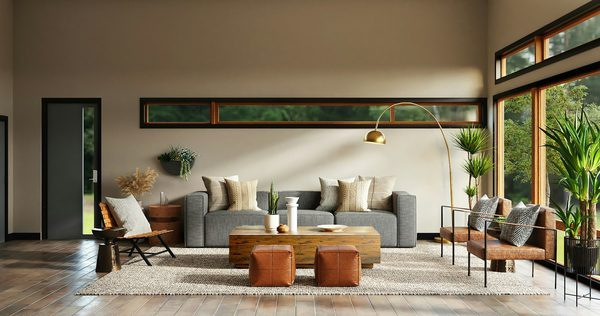

2026년 7월의 건축 보도를 나란히 읽으면 하나의 기류가 떠오른다. 단독의, 기념비적 '스타키텍트' 사물 — 대지 위에 떨어진 서명 같은 건물 — 의 시대가, 더 미묘하고 그리고 업계 스스로의 표현으로 더 '공감적'인 무언가에 자리를 내주고 있다. 어떻게 찍히는가보다 누구를 위한 것인가로 측정되는 건축이다. 이번 시즌 가장 큰 프로젝트들은 문화 기관이고, 그것들이 던지는 질문은 이제 '누구의 걸작'이 아니라 '누구의 도시, 누구의 공중(公衆)'이다.
서명이 아니라 문화 건축
이번 여름 이정표를 지나는 것들을 보라. 황푸강 위로 나선을 그리는 상하이 그랜드 오페라하우스, 아부다비의 새 공연예술센터, 그리고 카타르의 미래 루사일 뮤지엄 — 루사일 앞바다 23만 제곱미터 인공섬에 자리 잡는 헤르초크 앤 드 뫼롱의 설계다. 이것들은 사적 트로피가 아니라 관객·소장품·시민 생활을 담기 위해 지어지는 기관이다. 건축가가 유명 인사일 때조차, 과제는 '저자를 알려라'에서 '공중을 잘 담아라'로 옮겨갔다. 기념비는 여전히 존재한다 — 다만 쓰임으로 스스로를 정당화하라는 요구를 받았을 뿐이다.

"기념비는 사라지지 않았다. 더 어려운 질문을 받았을 뿐이다 — 물 건너에서 어떻게 보이는가가 아니라, 안에 들어선 순간 누구를 담는가."
저자에서 관객으로
이것은 건축이 무엇을 위한 것인가에 대한 진짜 재편이다. 스타키텍트의 시대는 건물을 저자의 천재성에 관한 주장으로 다뤘고, 공중은 사진의 배경이었다. 공감적 전환은 이를 뒤집는다. 관객이 주체가 되고, 건축은 그것이 가능케 하는 삶의 질로 평가된다 — 로비가 어떻게 사람을 모으는지, 홀이 어떻게 목소리를 실어 나르는지, 미술관이 어떻게 도시가 스스로를 보게 하는지. 야심이나 아름다움의 거부가 아니다. 야심을 그것을 액자에 넣는 스카이라인이 아니라, 그 방을 쓰는 사람들에게 쓰라는 요구다.
한국에게 이 전환은 시의적절하다. 최근의 공공건축 논의 — 시민 주도 설계, 심사 제도 개혁, '소속'을 주제로 한 축제 — 는 이미 이 음역에서 돌아간다. 그리고 이는 자재 이야기도 다시 짠다. 문화 건축의 시험이 그것이 전하는 경험일 때, 음향·촉감·실내 공기·천연 및 인증 자재의 정직한 사용은 마감이기를 멈추고 논증이 된다. 공감적 전환은 조용히 자재적 전환이기도 하다 — 관객이 실제로 느끼는 성질은 건물이 무엇으로 만들어졌는가로 이뤄지기 때문이다.
편집장 코멘트
ARCHINODE 입장에서 기념비에서 공감으로의 이동은 자재를 어떻게 말할 것인가에 대한 지침이다. 건물이 공중에게 주는 경험으로 평가될 때, 이기는 자재 서사는 '이게 얼마나 희귀한지 보라'가 아니라 '이것이 방 안의 사람에게 무엇을 하는가'다 — 발밑의 따뜻함, 홀의 고요, 폐 속의 공기, 주장을 신뢰하게 하는 인증. 한국에 들어오는 글로벌 브랜드도, 밖으로 나가는 한국 브랜드도, 자재를 스펙 시트만이 아니라 그 공간이 전하려는 인간의 경험에 묶어야 한다. 스타키텍트는 스카이라인을 팔았다. 공감의 시대는 관객이 느낄 수 있는 것을 산다.